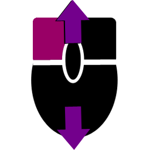
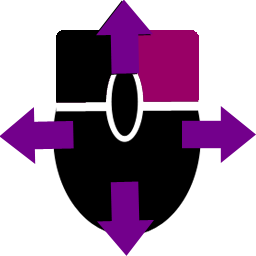
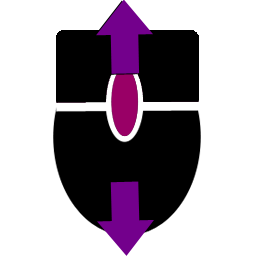

Uniwersytet Jagielloński w Krakowie
Wydział Fizyki, Astronomii i Informatyki Stosowanej
Modelowanie scen 3D z wykorzystaniem pixi.js
Praca licencjacka
na kierunku informatyka
Aleksandra Półtorak
Sterowanie
- obracanie kamery w poziomie
-  obracanie kamery w pionie
-  przesunięcie kamery
-  przybliżenie/oddalenie kamery